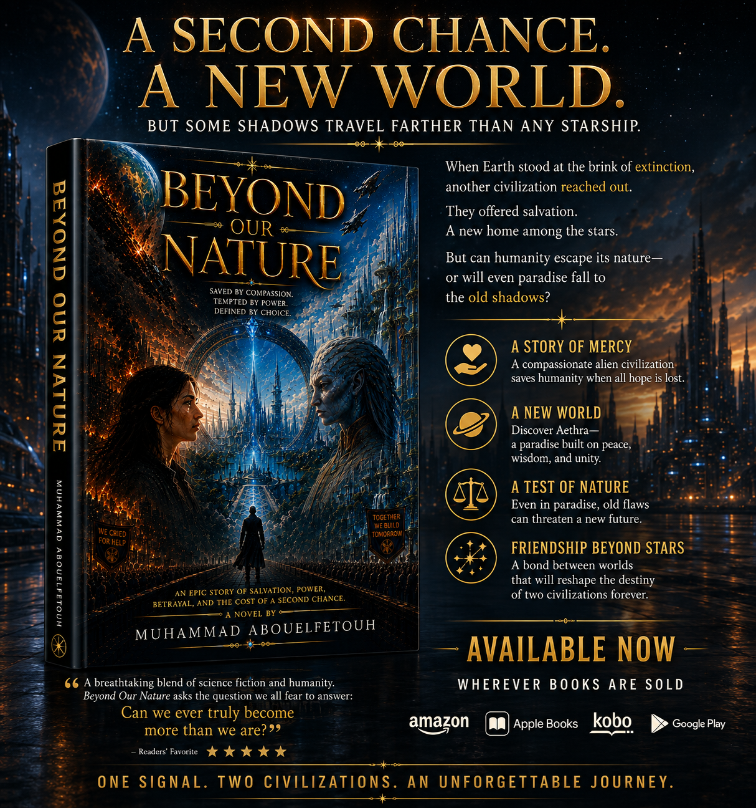
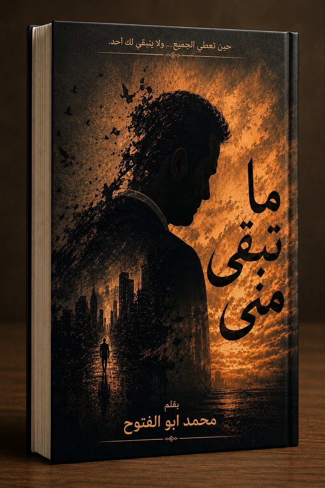
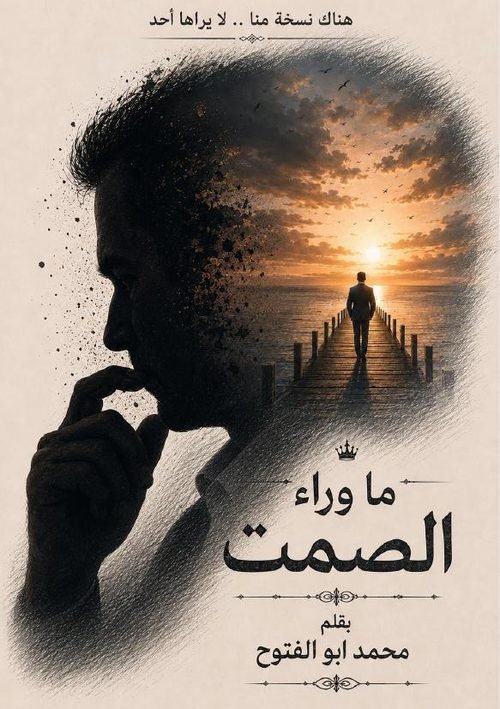
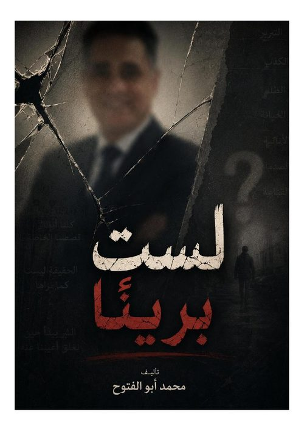
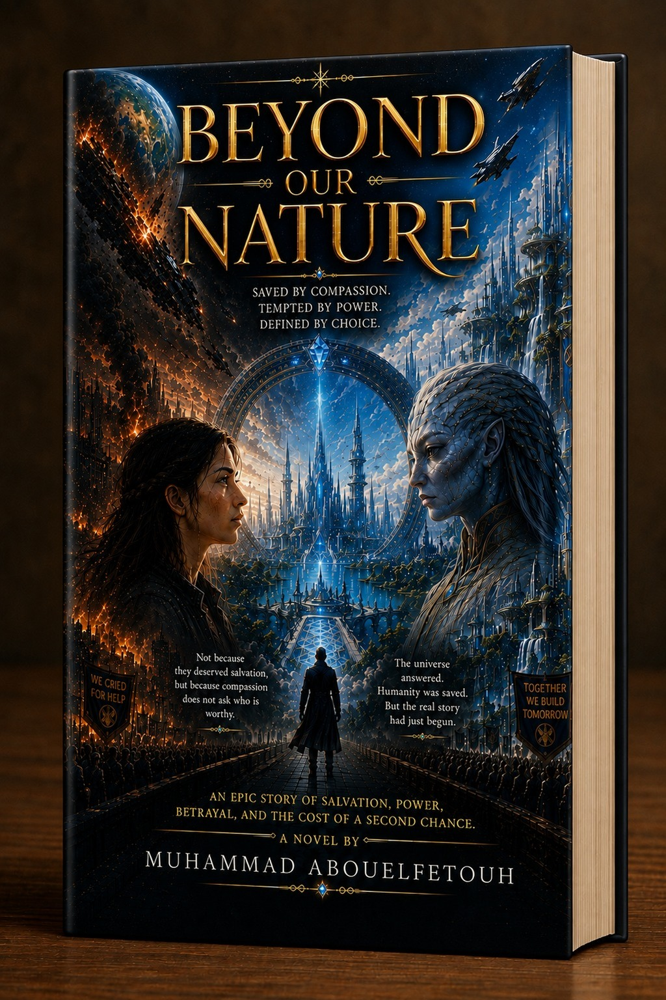

Über mich About me
Ich bin Muhammad Hassan – ein leidenschaftlicher App-Entwickler mit Sitz in Tübingen, Deutschland. Ich spezialisiere mich auf Flutter (Dart) und Mobile Development und habe einen starken Hintergrund in Sprachen, Unterricht und Problemlösung.
Nach meinem Vollzeit-IT-Training in der App-Entwicklung an der App Akademie (Flutter, Programmiergrundlagen, UX/UI Design, App-Veröffentlichung) entwickle ich moderne, benutzerfreundliche Apps und verbessere kontinuierlich meine Programmierfähigkeiten.
I'm Muhammad Hassan – a passionate app developer based in Tübingen, Germany. I specialize in Flutter (Dart) and mobile development, with a strong background in languages, teaching, and problem-solving.
After completing my full-time IT training in app development at App Akademie (Flutter, programming fundamentals, UX/UI design, publishing apps), I now build modern, user-friendly apps and continuously improve my coding skills.
Flutter- & Dart-Entwicklung Flutter & Dart Development
UX/UI-orientierte Denkweise UX/UI Focused Mindset
Starke Problemlösungsfähigkeiten Strong Problem-Solving Skills
Pragmatisch & sehr organisiert Hands-on & Very Organized
Kontakt aufnehmen Contact meProgrammierkenntnisse Programming Skills
Flutter · Dart · UI
IT-Ausbildung: Softwareprojekte, Flutter/Dart, UX/UI, App-Veröffentlichung
Sprachen: Arabisch, Deutsch, Englisch
Hintergrund: Englische Linguistik, Unterricht, Übersetzung & technische Arbeit
IT Training: Software projects, Flutter/Dart, UX/UI, app publishing
Languages: Arabic, German, English
Background: English linguistics, teaching, translation & technical work
Design-Fähigkeiten Design Skills
Logos · Figma · UI/UX
Erfahrung in Logo- und Grafikdesign, UI/UX-Design mit Figma und kreativer visueller Umsetzung für digitale Produkte. Experience in logo and graphic design, UI/UX design with Figma, and creative visual implementation for digital products.
Persönliche Highlights Personal Highlights
Disziplin · Fokus
Ehemaliger Tischtennisprofi und Mitglied der ägyptischen Nationalmannschaft. Erfahrung in Teamarbeit, Disziplin und Leistung unter Druck — Fähigkeiten, die meine Arbeit als Entwickler stark unterstützen. Former table tennis professional and national team member of Egypt. Experienced in teamwork, discipline, and performance under pressure — skills that strongly support my work as a developer.
Mein Lebenslauf My CV
Muhammad Hassan
Bachelor in Englischer Linguistik
Kontakt
Adresse:
Paulinenstrasse 44, 72072 Tübingen, Germany
E-Mail:
muhannmmad@gmail.com
Telefon:
+49 177 2718272
Fähigkeiten
- • Pädagogik
- • Didaktik
- • Unterricht
- • Grundkenntnisse IT
- • Hands-on-Mentalität
- • Organisation
Sprachen
- • العربية
- • الألمانية
- • الإنجليزية
Portfolio
Profilzusammenfassung
Muhammad Hassan (geboren am 19. Oktober 1975 in Ägypten) ist ein deutsch-ägyptischer Sprachwissenschaftler mit deutscher Staatsangehörigkeit und Wohnsitz in Tübingen. Er verfügt über einen Bachelor- und Masterabschluss in Englischer Sprache sowie langjährige Erfahrung als Lehrer, Universitätsdozent, Übersetzer und Maschinenbediener. Seine Interessen liegen in Bildung, Sprachen, Technologie und App-Entwicklung.
Berufserfahrung
Deutschland
- Maschinen- und Anlagenbediener – Vöhringer GmbH (2021 – 2024)
- Patiententransport – UDO GmbH, Tübingen (04/2018 – 04/2020)
- Post- und Paketzusteller – Deutsche Post (2016 – 2018)
- Arabischlehrer (Teilzeit) – VHS Tübingen (2019)
- Kinderbetreuer – Eispachschule, Tübingen
Ägypten
- Universitätsdozent – Al-Azhar Universität, Fakultät für Erziehungswissenschaften, Englischabteilung (2013 – 2016)
- Englischlehrer (Sekundarstufe, 16–19 Jahre) – Al-Azhar Institut, Benha (1999 – 2016)
- Übersetzer – Orabi Übersetzungsbüro (Arabisch–Englisch / Englisch–Arabisch) (1995 – 1999)
Bildung & Qualifikationen
Deutschland
- Industriemechanik / Metallumformung (IHK) (2017 – 2021)
- Maschinen- und Anlagenbediener – GIBA Rottenburg (2019 – 2021)
- Vollzeit-App-Entwicklung – App Akademie GmbH (05/2024 – aktuell)
Flutter/Dart, UI/UX, Programmiergrundlagen, App-Deployment
Ägypten
- Bachelor of Arts – Englische Sprache, Benha Universität (1993 – 1997)
- Masterabschluss – Englische Sprache
- Studium der Englischen Literatur – Al-Azhar Universität, Kairo (2012 – 2013)
Sport & Erfolge
🏓 Tischtennis – Ehemaliges Mitglied der ägyptischen Nationalmannschaft
Meine Werke My Writings
Lange bevor ich programmiert habe, war die Literatur meine Welt. Ich habe sie studiert und fast 20 Jahre lang in diesem Bereich gearbeitet – unterrichtet, geschrieben und in der Sprache gelebt. Heute, wenn ich nicht gerade Apps designe oder Interfaces entwickle, tauche ich wieder in diese andere Welt ein – eine aus Worten. Das Schreiben war schon immer mein stiller Begleiter: ein Ort, um Gefühle zu verarbeiten, Ideen zu erkunden und Geschichten zu erzählen, die noch lange nach der letzten Seite nachwirken – von Romanen über Gedichte bis zu kürzeren literarischen Texten. Unten findest du zwei literarische Bücher, die ich veröffentlicht habe, geschrieben in stillen, gestohlenen Momenten. Lies ein wenig über jede Geschichte und lade anschließend das vollständige Buch kostenlos als PDF herunter. Long before I ever touched a line of code, literature was my world. I studied it, then spent nearly 20 years working in the field — teaching, writing, and living inside language. These days, when I'm not designing apps or building interfaces, I disappear into that other world again — one made of words. Writing has always been my quiet companion: a place to process feelings, explore ideas, and tell stories that stay with people long after the last page — from novels to poetry and shorter literary pieces. Below are two literary books I've published, written in stolen, quiet moments. Read a little about each one, then download the full book as a free PDF.


Was von mir bleibt What Remains of Me
„Wenn du allen alles gibst... und niemand für dich übrig bleibt.“ "When you give everyone everything... and no one remains for you."
PDF herunterladen Download PDF
Jenseits des Schweigens Beyond the Silence
„Es gibt eine Version von uns... die niemand sieht.“ "There's a version of us... that no one ever sees."
PDF herunterladen Download PDF
Ich bin nicht unschuldig I Am Not Innocent
„Die Wahrheit ist nicht immer das, was sie scheint.“ "The truth is not always what it seems."
PDF herunterladen Download PDF
Jenseits unserer Natur Beyond Our Nature
„Gerettet durch Mitgefühl. Versucht durch Macht. Definiert durch Wahl.“ "Saved by compassion. Tempted by power. Defined by choice."
Fähigkeiten & Erfahrung Skills & Experience
Ich konzentriere mich darauf, moderne und benutzerfreundliche Anwendungen mit Flutter zu entwickeln und dabei klare UI/UX-Prinzipien einzuhalten. Unten finden Sie einen Überblick über die Technologien und Tools, die ich in meinem Entwicklungsworkflow verwende. I focus on building modern, user-friendly applications with Flutter while maintaining clean UI/UX principles. Below is an overview of the technologies and tools I use in my development workflow.
Meine Fähigkeiten My Skills
90%
90%
90%
90%
75%
80%
90%
Flutter-EntwicklerFlutter Developer
2024 – Heute · App Akademie Projekte
2024 – Present · App Akademie Projects
Übersetzer & LinguistikTranslator & Linguistics
1995 – 2016 · Ägypten & Deutschland
1995 – 2016 · Egypt & Germany
Unterricht & CoachingTeaching & Coaching
1999 – 2016 · Al-Azhar Institut
1999 – 2016 · Al-Azhar Institute
Technischer MitarbeiterTechnical Worker
2017 – 2024 · Verschiedene Firmen, Deutschland
2017 – 2024 · Various companies, Germany
Flutter & App-EntwicklungFlutter & App Development
2024 – 2025 · App Akademie, Deutschland
2024 – 2025 · App Akademie, Germany
Bachelor in Englischer LinguistikBachelor of English Linguistics
1993 – 1997 · Banha Universität, Ägypten
1993 – 1997 · Banha University, Egypt
Lehramt & BildungsstudienTeaching & Education Studies
2012 – 2013 · Al-Azhar Universität, Kairo
2012 – 2013 · Al-Azhar University, Cairo
Sprach- & ÜbersetzungsarbeitLanguage & Translation Work
1995 – 1999 · Oraby Übersetzungsbüro
1995 – 1999 · Oraby Translation Office
Flaggen & Hauptstädte Quiz Flags & Capitals Quiz
Interaktives Lernspiel
Verwendete Technologien: HTML, CSS, JavaScript
Interactive learning game
Technologies used: HTML, CSS, JavaScript
Dienstleistungen Services
Individuelles Webdesign & Entwicklung Custom Website Design & Development
Erstellung responsiver, SEO-freundlicher Websites, abgestimmt auf Marke, Zielgruppe und Geschäftsziele.
Enthält Design-Entwürfe, UX-Optimierung und Frontend-Entwicklung (HTML, CSS, JavaScript, React/Vue)
sowie optional Backend-Unterstützung mit Datenbanken wie Firebase, Node.js oder PHP.
Ideal für: Kleine Unternehmen, persönliche Marken, Portfolios und Start-ups.
Create responsive, SEO-friendly websites tailored to brand, audience, and business goals.
Includes mockups, UX optimization, and front-end development (HTML, CSS, JS, React/Vue)
with optional backend support using Firebase, Node.js, or PHP.
Ideal For: Small businesses, personal brands, portfolios & startups.
Mobile App Design & Entwicklung (iOS & Android) Mobile App Design & Development (iOS & Android)
Entwicklung plattformübergreifender Apps mit Flutter oder React Native.
Fokus auf intuitives UI/UX, Leistung und plattformspezifische Richtlinien.
Enthält Login-Systeme, Echtzeitdatenbanken, Push-Benachrichtigungen und Integrationen wie Google Maps oder Stripe.
Ideal für: Start-ups, servicebasierte Apps, soziale Plattformen, Veranstalter.
Design and build cross-platform apps using Flutter or React Native.
Focus on intuitive UI/UX, performance, and platform standards.
Includes authentication, real-time databases, notifications, and integrations like Google Maps or Stripe.
Ideal For: Startups, service apps, social apps & event platforms.
UI/UX-Design für Websites & Mobile Apps UI/UX Design for Web & Mobile Apps
Professionelles UI/UX-Design mit Figma, Adobe XD oder Sketch.
Lieferung von kompletten Screenflows, Wireframes, klickbaren Prototypen und developer-ready Assets.
Fokus auf benutzerzentriertem Design zur Verbesserung der Usability und Conversion-Rates.
Ideal für: Unternehmen mit eigenen Entwicklern, die hochwertiges Design benötigen.
Professional UI/UX design using Figma, Adobe XD, or Sketch.
Includes full screen flows, wireframes, prototypes, and developer-ready assets.
Focus on clean, user-centered design to improve usability and conversions.
Ideal For: Companies with developers who need great design.
Logo-Design & Markenidentität Logo Design & Brand Identity
Gestaltung einprägsamer Logos und Erstellung vollständiger Branding-Kits
mit Farbpaletten, Typografie, Icons und Style-Guides.
Perfekt für klare, professionelle Markenpräsenz online und im Druck.
Ideal für: Neue Unternehmen, Rebranding, Influencer.
Design memorable, versatile logos and complete brand identity kits
including colors, typography, icons, and usage guidelines.
Helps brands stay visually consistent across all platforms.
Ideal For: New businesses, rebrands & influencers.
Professionelles Lebenslauf-Design & -Schreiben Professional CV / Resume Design & Writing
Erstellung moderner, ATS-freundlicher Lebensläufe mit klarer Struktur,
starken Erfolgen und professionellem Design.
Enthält sowohl Layout-Design als auch inhaltliche Optimierung für verschiedene Branchen.
Ideal für: Arbeitssuchende, Studierende, Berufswechsler, Freelancer.
Design modern, ATS-compatible resumes with strong achievements, clean layout,
and compelling storytelling.
Includes both design and content optimization for all industries.
Ideal For: Job seekers, students, career changers & freelancers.
Präsentationsdesign & Visuelles Storytelling Presentation Design & Visual Storytelling
Gestaltung professioneller Präsentationen mit klarer Struktur, Branding-Elementen,
Animationen und überzeugendem Storytelling.
Geeignet für Business-Pitches, Vorträge, Workshops und Unternehmenspräsentationen.
Ideal für: Business-Pitches, Webinare, Workshops & Unternehmensdecks.
Create impactful presentations with strong structure, branded visuals, animations,
and powerful storytelling.
Ideal for business pitches, webinars, workshops & company decks.
Ideal For: Business pitches, webinars, workshops & company decks.
Lassen Sie uns zusammenarbeiten Let's Work Together
Meine Adresse: My address:
Paulinenstr.44 72072 Tübingen Germany
Rufen Sie mich an oder WhatsApp: Call or Whatsapp me:
+49 177 2718272

Schreiben Sie mir eine E-Mail: Mail me:
info@muhammadhassan.eu
Folgen Sie mir: Follow me:
Senden Sie mir gerne eine Nachricht über das folgende Formular. Feel free to send me a message using the form below.
Seitenübersicht Sitemap
Der Weg durch diese Website, Station für Station. Your journey through this site, stop by stop.